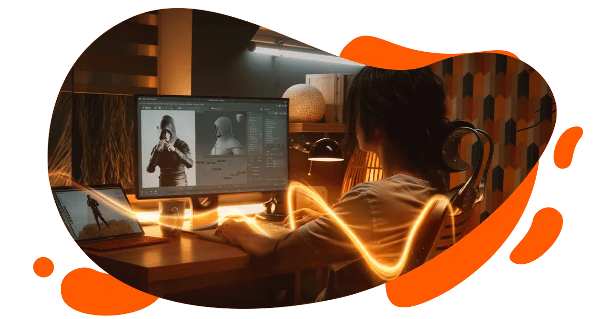

Desarrollo de videojuegos
El desarrollo de videojuegos es el proceso de convertir una idea en una experiencia interactiva. El equipo define qué puede hacer el jugador, crea un prototipo para probar las reglas y luego integra el código, los gráficos, las animaciones y el sonido. El trabajo abarca desde la planificación hasta el lanzamiento y las actualizaciones posteriores.

Funciones de un desarrollador de videojuegos
Las responsabilidades dependen del tamaño del equipo y de las necesidades del proyecto.
- Programación. Implementa los controles, las reglas y la física del juego. También puede programar el comportamiento de los enemigos.
- Diseño de juego. Colabora en la definición de mecánicas, niveles e interacciones y ayuda a comprobar si las ideas son viables.
- Integración de recursos. Incorpora gráficos, animaciones y sonidos para que se activen en el momento correcto.
- Uso de motores de juego. Utiliza herramientas como Unity o Unreal Engine para crear escenas y gestionar elementos como los gráficos y las colisiones.
- Trabajo en equipo. Coordina la implementación con artistas, guionistas, diseñadores y especialistas de sonido.
- Pruebas y corrección de errores. Reproduce fallos, corrige su causa y comprueba que la solución funcione.
- Adaptación a plataformas. Ajusta controles y rendimiento para las plataformas del proyecto, como computadoras, consolas, navegadores o celulares.
Ventajas y desventajas de desarrollar videojuegos
Ventajas
- Combina creatividad y tecnología. Permite convertir una historia o una regla en algo que el jugador puede explorar.
- Desarrolla habilidades variadas. Un proyecto da práctica en programación, solución de problemas y colaboración con otras disciplinas.
- Abre distintos caminos profesionales. Las habilidades pueden aplicarse en estudios de videojuegos, proyectos independientes o equipos que crean experiencias de realidad virtual.
Desventajas
- Requiere tiempo y recursos. Cada nivel, personaje o plataforma adicional aumenta el trabajo de producción y pruebas.
- Los errores pueden ser difíciles de reproducir. Un fallo puede aparecer solo con cierta combinación de acciones o en un dispositivo específico.
- Ajustar la dificultad exige iteración. Puede ser necesario cambiar un nivel varias veces para que el reto sea comprensible y entretenido.
Explora la guía
Cada área responde una pregunta distinta sobre cómo se crea un videojuego.
-
01 / Proceso
El proceso
Desde el primer prototipo hasta el lanzamiento y sus actualizaciones.
Ver las etapas → -
02 / Diseño visual
Arte y animación
Cómo se construye la identidad visual y se comunica lo que ocurre en pantalla.
Ver arte y animación → -
03 / Código
Programación
Qué aporta un motor y cómo se implementan las reglas del juego.
Ver herramientas → -
04 / Tipos de juego
Géneros y plataformas
Cómo cambian los controles y la experiencia según el tipo de juego y el dispositivo.
Explorar los géneros → -
05 / Colaboración
El equipo
Cómo se reparten las tareas y se revisa el trabajo antes de publicar.
Conocer las funciones →